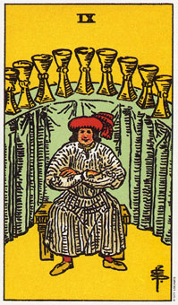

圣杯九意味对自己的满意和荣耀感。
在圣杯九当中有着内在的满足，当你的内在需求得到平衡时，你又重获自由而在回到人生的单纯喜悦中。由于你接受了自己以及所处的状态，你就能贡献更多的时间和精力于那些单纯的事物身上，并享受它们所带来的乐趣。它意味在这段期间内你能平静的反省过去的种种成就。
这张9描述的是一个对他本身有着健康看法的人，而且他了解你对他的看法只不过是看法之一。他比较重视自己的看法。这些杯子放置在比他还要高的位置，别人不太容易拿得到。他了解付出的价值所在，所以不愿意太轻易或太快付出。
他的双臂抱胸，保护着他的爱和力量的来源。他是一个拥有很多成就，并以自己为荣的人。他周遭有许多色彩，但是除了红色帽子和袜子之外，衣服上却没有任何鲜艳的颜色。他没有色彩缤纷的服饰代表着虽然他已从自己内心找到很大的满足，但还没有找到一个可以和他分享这些感觉的人。在到达十之前，他还是得稍微加点油。因为他需要理解，虽然他的爱很有价值，但是能够和别人分享时，则更具有价值(这对所有的牌都适用)。
大体上的意义
圣杯九形容一种对能圆满达成工作而感到的骄傲和满足。你内心所拥有幸福和喜悦的感觉，可能是来自于你的工作环境、人际关系，或是来自一种心灵上的成就感。
现在你内在的需求已经得到满足了，而你也能思考你所赢得的成功。在这张九牌当中有着从你对自己的爱里头所滋长出来的快乐、满足和平静。
两性关系上的意义
在两性关系分析当中如果看到了圣杯九，必伴随着许许多多的快乐和满足。由于你已经学会了爱你自己，也能评价出你自己的需求和能力，所以你现在要从一段两性关系当中寻求满足的机会是大多了，因为对于那些无法提供你足够需求的状况，你已经不害怕去拒绝它了。你不会再一味的往某种矛盾的情况里钻，而梦想着它的可能性，因为你很清楚机会可说到处都是。你知道如果目前的或未来的伴侣无法爱你或重视你，那么还会有别人可以给你该得的爱。
这张就暗示令人满意的两性关系，双方伴侣都很珍视彼此的付出及获得。
倒立的圣杯九
圣杯九倒立意味你追逐世俗的欢乐补偿你被拒绝的爱，或藉此否定自己。你害怕付出你的爱，因为恐惧你的“库存”将会耗竭。由于你不曾付出过任何的爱，也没有得到任何新的爱，因此内心不会有空间可容纳任何新事物，除非你将内心所拥有的部分付出给他人。你相当渴望深刻的感情，所以会透过世俗的事物，努力地想满足这份需求。
这可能会导致耽溺或强迫性的行为，包括嗜食、酗酒、磕药，或任何可能让你的内在渴望得到暂时性舒解的东西。这些耽溺通常可追溯到对爱的渴望。爱必须在你最需要它的时候到来，否则你无法感到满足。
看到这张倒立牌，你仿佛也看到了自己在嘴巴里放了些蜜糖，却不讲它们放在你的心中。也就是说你意对事物的钟爱来取代爱的行动。